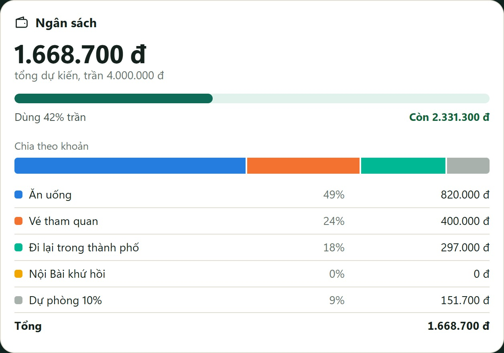
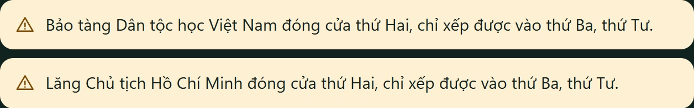
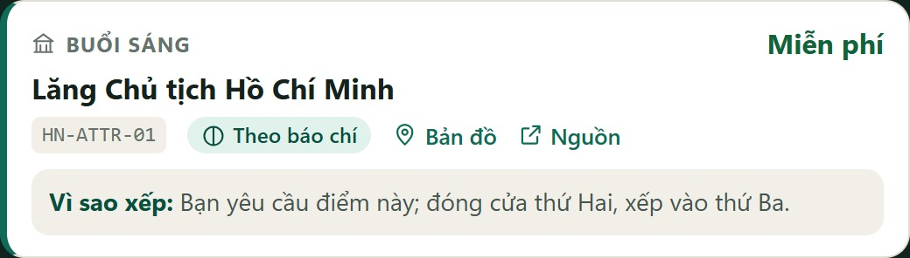
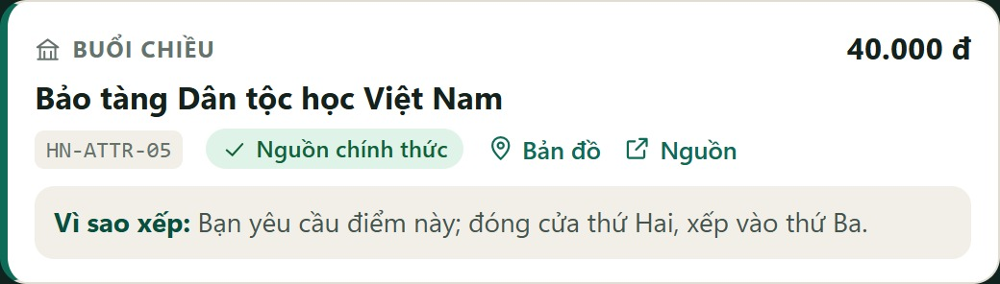

1 · Người dùng và pain
Gộp bốn loại lỗi: 14/98 (14,3%), dưới mốc 20%. Trái tuyến 0/98, đóng cửa 0/98.
"ra đó đi từ NB vào ks kiểu gì ạ?"VOZ, thread 678405 #1
"Mất gần 3 tiếng plan mà tới noi thì bị đóng cửa ;-;"Khảo sát, người trả lời đồng ý cho trích
Khảo sát đạt ngưỡng 20 người, VOZ dưới mốc. Khảo sát đưa sẵn lựa chọn; 5/24 câu trả lời chỉ được nhóm xác nhận, bỏ đi còn 16/19. Chưa phỏng vấn. Nhãn VOZ do AI gắn, chưa kiểm tay.
2 · Vì sao chọn bài này
| Hướng | Dấu hiệu | Mỗi lần tốn | Impact / tháng | Quyết định |
|---|---|---|---|---|
| Lịch tham quan, đi lại, dự toán Hà Nội 1-3 ngày | 12/98 bài; khảo sát 18/24 | 86 phút (khảo sát 24 người) | ≈ 6.600 giờ | Chọn |
| Chỉ cách đi và giá từ Nội Bài | 4/98 bài | 15 phút (ước tính) | ≈ 1.150 giờ | Gộp vào hướng trên |
| Cảnh báo bị tính giá cao khi đi xe | 3/98 bài, một sự việc | 350.000 đ một sự việc | ≈ 48 triệu đ | Loại: thiếu dữ liệu giá |
| Đổi, nâng hạng phòng cho lễ tân | chưa đào | chưa có số | không tính | Loại: khó hẹn lễ tân |
| Xử lý chuyến bay bị huỷ | chưa đào | chưa có số | không tính | Loại: ít người từng gặp |
461.000 ghế/tháng × 1% ≈ 4.600 người
4.600 người × 1 chuyến × 86 phút ≈ 6.600 giờ / tháng
461.000 = 11,07 triệu ghế đường bay Hà Nội và TP.HCM năm 2025, chia 12 tháng và chia đôi cho một chiều. Ghế chưa phải hành khách. 86 phút: trung bình giữa khoảng của 24 người trả lời khảo sát.
| 0,5% | 3.300 giờ |
| 1% | 6.600 giờ |
| 2% | 13.200 giờ |
Chữ nghiêng màu nâu: số ước tính hoặc mẫu nhỏ.
3 · Giải pháp
Lát cắt: một người từ TP.HCM lần đầu ra Hà Nội 1-3 ngày nhập ngày đi, trần ngân sách, nơi ở, sở thích. AI chọn điểm và thứ tự từ dữ liệu có mã nguồn, hoặc kết luận không xếp được. Người đó nhận lịch theo buổi kèm tổng chi, hoặc biết cần nới điều gì.
Code dừng sớm hoặc không đưa lịch trong các trường hợp:
Các bước luôn theo một thứ tự nên rẻ và dễ đo. Agent hay nhiều vai chỉ thêm lượt gọi model.
30 điểm tham quan, 20 quán ăn, 8 phương án Nội Bài. 31/50 địa điểm và 3/8 phương án chưa kiểm nguồn, giao diện ghi rõ từng mục.
Không đặt vé, không thanh toán, không gửi gì ra ngoài. Không làm ngoài Hà Nội hoặc quá 3 ngày.
4 · Demo trực tiếp
Thường · B21Hai người, 2 ngày, 4 triệu
"2 người đi Hà Nội 2 ngày từ thứ Bảy 05/12, ngân sách 4 triệu cho cả hai, ở phố cổ, thích di tích."
1Tổng tiền nằm trong trần, tách từng khoản

Lịch 2 ngày cho 2 người, tổng 1.668.700 đ trên trần 4.000.000 đ. Câu này đạt 4/4 lượt đánh giá.
Khó · B04Muốn đi hai nơi đóng cửa thứ Hai
"3 ngày từ thứ Hai 07/12, 3 triệu, ở phố cổ, nhất định muốn viếng Lăng Bác và đi Bảo tàng Dân tộc học."
1Báo cả hai nơi đóng cửa thứ Hai

2Xếp cả hai vào ngày 2, thứ Ba


Tổng 2.010.800 đ trên trần 3.000.000 đ. Câu này đạt 3/4 lượt, trượt lượt 2.
5 · Đánh giá thế nào
23 câu: 4 thường, 14 khó, 5 từ chối (2 câu tấn công). 9/23 lấy từ lời người dùng hoặc data thật.
Code chấm: lịch hợp lệ, ngân sách đúng.
AI chấm: đúng hành vi, từ chối an toàn.
"Đạt khi ≥ 85% số câu qua, và 100% câu tu_choi qua, và 0 output có lịch vi phạm giờ mở cửa hoặc vượt trần ngân sách."
| Đọc sai phạm vi | 3 |
| Không nhận câu hỏi từ Nội Bài | 3 |
| Bỏ sót điểm được yêu cầu | 1 |
| Xếp trùng điểm | 1 |
Ví dụ B15: hỏi lịch Đà Nẵng, bản đầu trả lịch Hà Nội.
Cải tiến: code đối chiếu kết quả đọc của model với tin nhắn. Nhóm ba lỗi tô màu: 0/7 lên 5/7. B04 tệ đi.
Lượt 2 còn 2/7 lịch trượt metric ngân sách.
Cột đạt do hai phiên AI chấm độc lập (lượt 1 khớp 22/23, lượt 2-4 khớp 23/23). Chưa người kiểm tay.
6 · Chi phí khi dùng thật
mỗi task thành công, gpt-5-nano
$0,0011 mỗi phiên ÷ tỉ lệ đạt lượt 2 (19/23)
Mô phỏng 50 phiên chạy qua bản chạy thử, seed 42, 0 phiên lỗi, trung bình 11,8 giây mỗi phiên. Token đọc từ API.
| Model (giá vào · ra mỗi 1 triệu token) | Mỗi task đạt | 500 người | 2.000 người | 10.000 người |
|---|---|---|---|---|
| gpt-5-nano ($0,05 · $0,40) | $0,0013 | $0,55 | $2,21 | $11,06 |
| gpt-5.4-mini ($0,75 · $4,50) | $0,0171 | $7,01 | $28,03 | $140,15 |
Cột người dùng là chi phí mỗi tháng: thấp, cơ sở, cao. Số người dùng tự ước tính; cơ sở bằng khoảng 43% quy mô 4.600 người ở trang 2.
| Kiểu người dùng (tỉ lệ tự ước tính) | Lượt hỏi | Token vào | Token ra |
|---|---|---|---|
| Xếp một lần · 60% | 1 | 3.689 | 785 |
| Sửa nhiều lần · 30% | 3 | 11.594 | 2.505 |
| Xếp lại khi đang đi · 10% | 5 | 26.685 | 4.988 |
So với impact: $0,0011 mỗi người mỗi tháng so với 86 phút tìm thông tin (khảo sát 24 người). Riêng tiền model thì đáng làm.
Chưa tính: máy chủ, công cập nhật giờ và giá, công người kiểm, nên chi phí thật sẽ cao hơn.
7 · Kết luận
| Câu hỏi | Số đo được | Đánh giá |
|---|---|---|
| Pain có thật? | VOZ: bốn loại lỗi gộp 14,3%, dưới mốc 20%. Khảo sát: 18/24 gặp ít nhất một việc. Chưa phỏng vấn. | Có theo khảo sát, VOZ chưa đạt |
| Đủ tốt chưa? | Lượt 2 đạt 83%, chuẩn 85%. Sau khi sửa tiếp đạt 100% trên bộ cũ nhưng bộ giữ riêng chỉ 8/10. | Chưa |
| Chi phí chịu được? | $0,0013 mỗi task thành công; $2,21 mỗi tháng cho 2.000 người. | Được, xét riêng tiền model |
Phỏng vấn 3 người đúng đối tượng, ít nhất 2 người kể được một lần gặp lỗi.
Bộ câu do người ngoài nhóm viết đạt ≥ 85%, mọi câu từ chối đều qua, người thật kiểm tay.
Kiểm nguồn 31 địa điểm và 3 phương án Nội Bài còn lại.
8 · Nếu có thêm một tuần
Lỗi nguy hiểm nhất: giá hoặc giờ trong dữ liệu sai mà lịch vẫn qua bộ kiểm. Vì thế mỗi mục đều hiện mã nguồn và trạng thái kiểm để người đi xem lại.